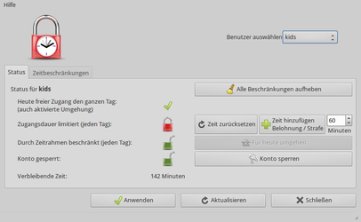

Timekpr
Dieser Artikel wurde für die folgenden Ubuntu-Versionen getestet:
Ubuntu 16.04 Xenial Xerus
Ubuntu 14.04 Trusty Tahr
Zum Verständnis dieses Artikels sind folgende Seiten hilfreich:
Timekpr (von engl. Timekeeper = Zeitverwalter) ist eine Software, die Benutzer nach einer bestimmten Nutzungszeit automatisch abmeldet und dann für den Rest des Tages die Anmeldung deaktiviert. Außerdem kann festgelegt werden, welche tägliche Zeitspanne den Benutzern und an welchen Wochentagen der Computer zur Verfügung steht. Damit eignet sich das Programm insbesondere für Kinder bzw. Eltern, die deren Computernutzung einschränken möchten.
Ältere Versionen des in Python erstellten Programms setzten den früher bei Ubuntu als Standard eingesetzten Displaymanager GDM 2 voraus. Mit der Umstellung von Ubuntu auf LightDM funktionierte das Programm daher seit Ende 2011 nicht mehr. Erst im Frühjahr 2014 wurde es von Eduards Bezverhijs soweit überarbeitet, dass es wieder mit allen Ubuntu-Varianten, die LightDM einsetzen, harmoniert.
Voraussetzungen¶
Damit das Programm erwartungsgemäß funktioniert, gelten folgende Voraussetzungen:
Die einzuschränkenden Benutzerkonten dürfen keine Administrator- bzw. Root-Rechte besitzen. Praktisch sind also mindestens zwei Konten auf dem jeweiligen Rechner erforderlich: ein Eltern-Konto zur Verwaltung (dies entspricht unter Ubuntu der Mitgliedschaft in der Gruppe
sudo; siehe auch Benutzer und Gruppen) und ein eingeschränktes Kinder-Konto.Bei der Nutzung von Timekpr unbedingt die Gastsitzung deaktivieren, die sonst einen zeitlich unbegrenzten Zugang zum Rechner ermöglicht
Auf eine automatische Anmeldung (Autologin) sollte verzichtet werden
Ab Ubuntu 13.10 wird noch folgendes Paket benötigt, das den Befehl gksudo zur Verfügung stellt [1]:
gksu (universe)
 mit apturl
mit apturl
Paketliste zum Kopieren:
sudo apt-get install gksu
sudo aptitude install gksu
Installation¶
 Das Programm ist nicht in den offiziellen Paketquellen enthalten, da Canonical keinerlei Interesse an derartigen Programmen zeigt. Zur Installation muss man daher auf ein "Personal Package Archiv" (PPA) [2] ausweichen.
Das Programm ist nicht in den offiziellen Paketquellen enthalten, da Canonical keinerlei Interesse an derartigen Programmen zeigt. Zur Installation muss man daher auf ein "Personal Package Archiv" (PPA) [2] ausweichen.
PPA¶
Für das Programm existieren unterschiedliche Fremdquellen. Meiden sollte man unbedingt die veralteten PPAs des Teams timekpr-maintainers. Empfohlen wird dagegen das PPA von Eduards Bezverhijs.
Adresszeile zum Hinzufügen des PPAs:
ppa:mjasnik/ppa
Hinweis!
Zusätzliche Fremdquellen können das System gefährden.
Ein PPA unterstützt nicht zwangsläufig alle Ubuntu-Versionen. Weitere Informationen sind der  PPA-Beschreibung des Eigentümers/Teams mjasnik zu entnehmen.
PPA-Beschreibung des Eigentümers/Teams mjasnik zu entnehmen.
Damit Pakete aus dem PPA genutzt werden können, müssen die Paketquellen neu eingelesen werden.
Nach dem Aktualisieren der Paketquellen kann das folgende Paket installiert werden:
timekpr (ppa)
mit apturl
Paketliste zum Kopieren:
sudo apt-get install timekpr
sudo aptitude install timekpr
Einstellungen¶
Timekpr ist nach der Installation sofort aktiv, allerdings ohne irgendwelche Beschränkungen. Die Oberfläche zur Verwaltung lässt sich bei Ubuntu-Varianten mit einem Anwendungsmenü über "System -> Timekpr Steuerung" aufrufen [3]. Ansonsten verwendet man den Befehl timekpr-gui. Da der Aufruf scheitert, wenn er nicht mit Root-Rechten ausgeführt wird, verwendet man den folgenden Befehl [4][5]:
gksudo /usr/bin/timekpr-gui
Dann öffnet sich ein Konfigurationsfenster. Hier kann man einen eingeschränkten Benutzer auswählen und dessen Einstellungen bearbeiten. Ist man fertig, speichert man die Änderungen.
|  |
| Übersicht |
| Zeitbeschränkungen |
Nutzung¶
Timekpr ist als Symbol (Vorhängeschloss) in der Benachrichtigungsanzeige (indicator applet) sichtbar. Klickt man darauf, so erhält man eine Meldung, wie viel Zeit dem aktuellen Benutzer noch zur Verfügung steht. Administratoren sehen stattdessen ein grünes, geöffnetes Schloss.
Nach Ablauf der Zeit wird der aktuelle Benutzer automatisch abgemeldet. Zuvor erfolgen zwei Warnungen (8 Minuten und 2 Minuten vor Zeitablauf). Daten, die dann trotz aller Warnungen nicht gespeichert worden sind, gehen unweigerlich verloren.
Im Anmeldefenster erscheint beim Versuch, sich erneut anzumelden, die Fehlermeldung: "Berechtigung verweigert".
| Status | |
| Symbol | Beschreibung |
| keine Einschränkung | |
| Einschränkung aktiv | |
| Einschränkung aktiv - Nutzungszeit nähert sich dem Ende | |
| Nutzungszeit abgelaufen | |
Problembehebung¶
Timekpr kann unter folgenden Umständen die Nutzungsdauer nicht kontrollieren:
bei Benutzern mit Root-Rechten (Mitglieder der Gruppe "
sudo")beim Einsatz anderer Betriebssysteme (Windows, Mac OS X)
beim Computerbetrieb von einer Live-CD oder einem Live USB-Stick
wenn auf dem System außer Unity, GNOME, KDE, Xfce und LXDE noch andere Desktop-Umgebungen ịnstalliert sind, die eventuell nicht mit Timekpr kooperieren und der Nutzer sich über diese anmelden kann (entscheidend ist nicht die Desktop-Umgebung, sondern der verwendete Displaymanager)
Timekpr ist auch wirkungslos, wenn es dem (gesperrten) Benutzer möglich ist, sich mit dem Passwort eines anderen Nutzers wieder anzumelden.
Links¶
Drei Rechner, drei Kinder - Lösungsvorschlag für Großfamilien
Timekpr - Easy To Use Parental Control App for Ubuntu 14.04 LTS
 - Blogbeitrag, 05/2014
- Blogbeitrag, 05/2014Timekpr - franz. Ubuntu-Wiki
Pequerrechos
- alternatives Programm in der Programmiersprache ValaKinder
 Ubuntu kindgerecht gestalten
Ubuntu kindgerecht gestalten
- Erstellt mit Inyoka
-
 2004 – 2017 ubuntuusers.de • Einige Rechte vorbehalten
2004 – 2017 ubuntuusers.de • Einige Rechte vorbehalten
Lizenz • Kontakt • Datenschutz • Impressum • Serverstatus -
Serverhousing gespendet von